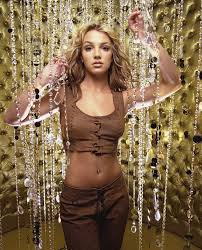
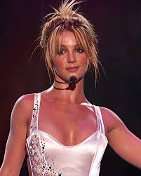
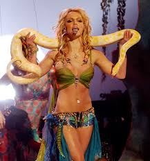

Britney Spears was born on December 2nd, 1981. She is an American singer, dancer, and pop icon known as the “Princess of Pop.”
She rose to fame in the late 1990s with her debut album Baby One More Time, which became a global sensation. Spears became one of the best selling music artists of all time with her many hits.
Beyond her music, Britney is known for her influence on pop culture, memorable performances, and groundbreaking music videos.
Despite personal struggles and intense media scrutiny, she has maintained a lasting legacy in the music industry and remains an iconic figure in pop music worldwide.
Baby one more time -1998
Opps... I did it again! -2000
Toxic -2004
Im a slave 4 u -2001
Womanizer -2008
Baby one more time -1999
opps... I did it again! -2000
Britney -2001
In the zone -2003
Blackout -2007
Circus -2008
Femme Fatale -2011
Britney Jean -2013
Glory -2016
Sold over 100 million records worldwide
Her debut single "Baby one more time" became one of the best selling singles of all time
She is known as the "Princess of pop" due to her intense influence on pop
Countless awards won and holds Guinness world record.